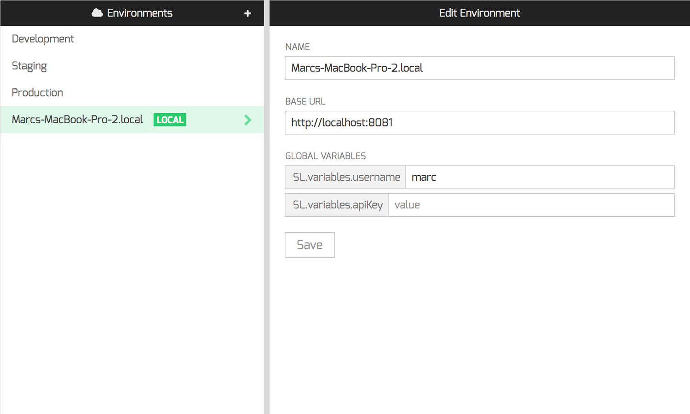
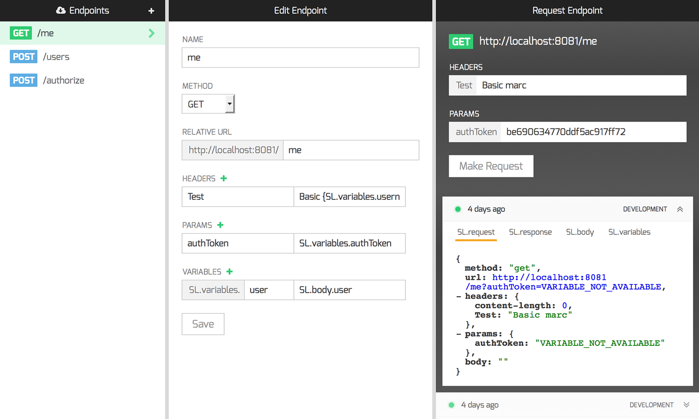
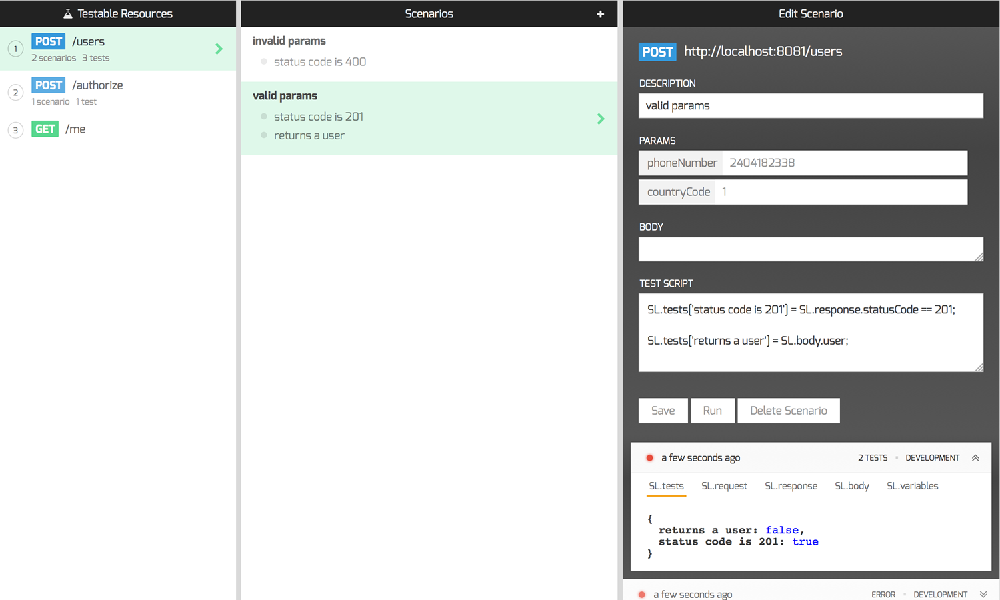

- Environments
- Endpoints
- Tests
Local
1Easily connect your local environments with the StopLight CLI tool.
Environment Variables
2Use the StopLight variables system to set environment specific variables for use in your requests and tests.
- 1
- 2
Endpoints
1... are HTTP resources.
Variables
2Use variables anywhere. Parameters, headers, tests.
3Set variables using any data present in the request. Variables are scoped to the current user and environment.
4Variables auto fill if present in the current environment.
History
5View an endpoint’s request history for the current environment.
- 1
- 2
- 3
- 4
- 5
Test Order
1Drag and drop to update the order in which tests are run. Variables persist between tests.
Scenarios
2Create scenarios to test your endpoints under a variety of conditions.
Tests
3Write simple test scripts in javascript. Scripts have access to a special object, “SL”, that contains request, response, and variables data.
4View the test history for the current environment.
Run your entire test suite with one click, for any environment.
- 1
- 2
- 3
- 4